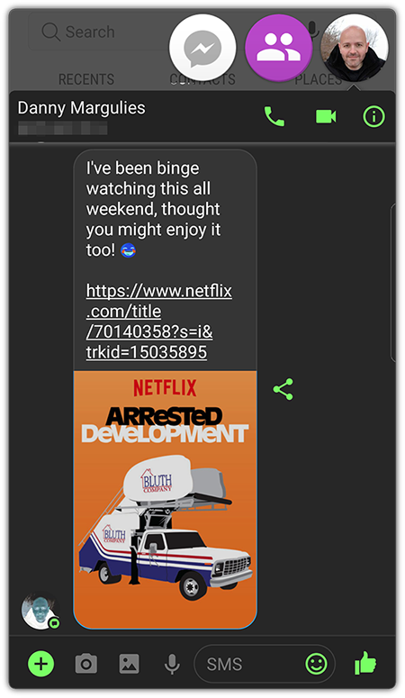
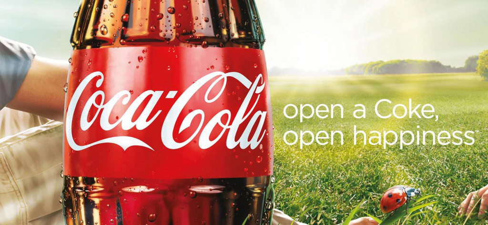

In this module you’ll learn:
- Common misconceptions that even some experienced pros have about writing effective copy
- The most critical, yet often overlooked, factor in writing copy that converts
- How to uncover golden psychological nuggets that will make your copy 10X more effective
- My “Three-Eyed” Process for collecting great intel from clients
- How you can consistently turn out fantastic copy — quickly and efficiently
- The exact system I use to turn rough drafts into conversion copywriting gold
Next week, you’ll be hitting the ground running and learning exactly how I write specific types of copy.
But first it’s important to take a step back and ask the million dollar question: How do top freelance copywriters consistently deliver fantastic, EFFECTIVE copy — that clients love — every single time?
This question gets especially fun when you consider that many of the top pros aren’t even great writers!
Moreover, for every piece of conventional copywriting wisdom you read about, I can show you HUNDREDS of top paid professionals who buck the rules and still achieve massive success.
The truth is, being a great freelance copywriter isn’t about tactics — like “writing like you talk,” “understanding features vs. benefits,” or cute acronyms like AIDA.
Those can be helpful — and you’ll find all of my best tactics for writing great copy in this course (including formulas, templates, and everything else you need to systemize your copywriting).
But it all starts with having the right mindsets. Because those are the common thread all top freelance copywriters possess — in spades.
To emulate the success of elite freelance copywriters, you need to think like them.
Let’s get specific! There are 3 key mindsets all top freelance copywriters have in common. Watch the video below to learn what they are, and how you can adopt them to fuel your own freelance copywriting success.
Three Critical Mindsets of Top Freelance Copywriters
Conversion copywriting is one of the most misunderstood aspects in all of marketing. For this reason, new and even more experienced copywriters often wonder if they really “have what it takes” to write copy that converts.
Many more stay stuck in the trap of, “How can I get hired to write copy that converts without having a previous ‘track record’?”
I used to worry about this too. But over the years I’ve discovered that these fears are based on 2 common misconceptions.
MISCONCEPTION #1: The first is the underlying assumption that you’re SOLELY responsible for making sure your copy converts. In the real world, that isn’t how it works.
In the hit TV show Mad Men, top-gun copywriter Don Draper sums up this wisdom beautifully when he says to a client: “It’s not a science. We’ll do our best.”
Even though Mad Men is just a TV show, the writers did an amazing job of nailing the reality of how conversion copywriting really works.
MISCONCEPTION #2: : The second misconception is equally false: Many people assume that “conversion copywriting” requires some mystical ability that only a few lucky writers are born with.
The truth is, writing effective copy is a learned skill that anyone can get the hang of — oftentimes fairly quickly.
In fact, you’ve been writing conversion copy your whole life!
- Sent an email to a coworker requesting a meeting,
- Successfully recommended a movie to someone over text,
- Or asked a friend out to lunch on Facebook Messenger

Other so-called “experts” love to write long articles about things like A/B testing, and more “scientific” conversion tactics.
But the truth is, when you break it down, “conversion copy” simply means words that get people to take action .
And it is more art than science.
It’s an intuition you can develop once you get into the habit of thinking about how people react to things.
Now let’s dive in so you can see exactly how it’s done.
The masterful psychology behind effective copy
Over the next 6 weeks, you’ll learn specific tactics for writing the various types of copy we’ll be covering. For now, I want to start by giving you a solid understanding of how the best freelance copywriters approach the art and science of conversion copy.
The first thing to realize is that, when it comes to writing copy that converts, there is no one-size-fits-all blueprint. If there were, it would be as easy as bagging groceries… Anyone could do it, and clients wouldn’t happily pay hundreds of dollars per hour for top notch copywriters.
This is also why rigid tools, like formulas and checklists, aren’t the magical solutions they’re sometimes made out to be. A great copywriter isn’t a box-checker! You need to be flexible and adapt to different situations.
A better approach is to train your brain to be what I call a Conversion Machine.
In other words, you can develop an INTUITION about conversion copy which is 100x more powerful and reliable than any checklist or formula.
Like conversion copywriting, being charismatic can require different behaviors depending on the situation. Masters of charisma understand this; they know there’s no way to manage all of the variables (like posture, tone, etc.) using checklists.
Instead, they focus on ONE thing — like confidence, relaxation, or caring — and the correct posture, tone, and other charismatic behaviors naturally follow.
This discovery was an incredible eye-opener for me, because it describes almost exactly how I’ve always approached Conversion Copywriting.
I focus on ONE thing above all else…
The most powerful tool for writing conversion copy
If you ask most copywriters what the most important component of conversion copywriting is, you’ll get answers like…
- “Emphasize benefits, not just features”
- “Know your audience’s pain points”
- “Create urgency!”
These are useful things to keep in mind. But the most critical factor in writing conversion copy is understanding the reader’s story .
The reason stories are so powerful is that they reveal golden psychological nuggets that make your copy 100x more effective.
Often, they answer with something like this: “Oh, OK. My target audience is busy moms who want to save time.” Or, “Our readers are startup entrepreneurs with 5-15 employees.”
Those may be interesting facts, but they’re not a story.
For example, if I tell you that “The Queen died and then the King fell ill” — those are just facts.
Whereas “The Queen died and then the King fell ill of a broken heart” is a STORY.
Do you see the difference? Again, notice how the story is psychologically revealing, opening the door for great copy.
To drive this point home further, let’s return to our “busy entrepreneur with 5-15 employees” for just a minute. Let’s say I asked you to write an email selling remote bookkeeping services to them.
How would you know what to write about?
Sure, you have some facts… You know the reader owns a growing business, and presumably needs bookkeeping services. You can even imagine he’d love to save some time and money.
But when you sit down to write, suddenly, you’ll notice you don’t have much to go on.
You might say something like, “We can save you time,” or, “We can save you money!” But your copy is going to be generic, bland, and ineffective because you’re missing the STORY that’s driving it.
On the other hand, see how different things are when I tell you a story instead:
John started a business a few years ago. At first, he did everything on his own, and didn’t have much need for a bookkeeper. Now, he has 5 employees, and his company is growing quickly.
He still doesn’t have his books in order… He knows he needs to figure it out, but he’s confused about how and overwhelmed with running his business.
He doesn’t think he needs a full time bookkeeper, but can he really trust a part time or remote person to handle sensitive financial information? He isn’t even sure if he can afford it…but then again, how can he afford NOT to get his company’s finances in order?
Every time he thinks about it, it makes him want to run and hide…maybe take the afternoon off and go to the movies to get his mind off of it. But like a monster under the bed that just won’t go away, he knows the problem will only get worse until he finally faces it head on.
Still, he has no idea HOW to even do that. SIGH. One day he goes onto Facebook to procrastinate and distract himself from the pressures of work, and, lo and behold, he sees an ad for bookkeeping services.
He signs up to find out how the service can help HIM…which is where your email comes in…
BAM! Look at all the awesome psychological nuggets you’ve just picked up.
It’s almost like a movie (except with no ending yet)…
- There’s an inciting incident (the growth of John’s company)
- A burning desire (to get his company’s finances in order)
- And even a villain (procrastination / analysis paralysis)
Look how quickly you go from not knowing what to write about, to having TONS of options for a great email — all from understanding John’s STORY.
3 Rules for uncovering any reader’s story
Rule #1: Dig for the story
Occasionally, a client may have their customer’s story all figured out. But most of the time, it’s up to you to go looking for it.
The following case study shows a real life example of how I did this — and how I unearthed a “hidden” detail that paid off in an unexpected way.
Rule #2: Don’t be fooled by false stories
Why are Coca-Cola advertisements loaded with words like friends , family , and happiness — and never words like drink , hydration , or flavor ?

Coca-Cola’s writers long ago figured out that people don’t primarily choose Coke because they’re thirsty.
Great copywriters train themselves to see past the obvious. You should always be digging beneath the surface to find the deeper truths.
Read through the following case study to find out how I spot false stories — and push past them to get to the heart of the real story.